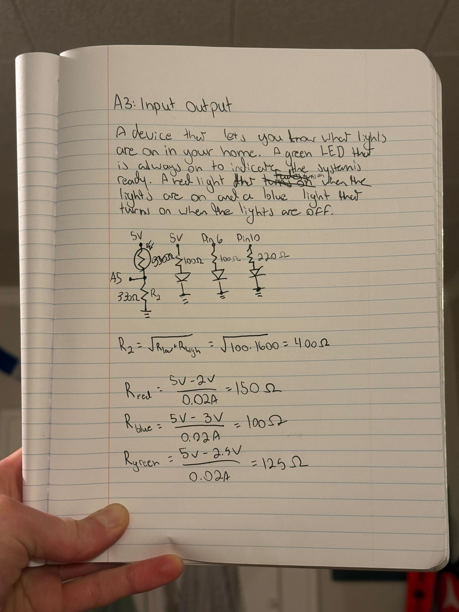

This graph illustrates the voltage across the voltage divider over the course of the above video.
This graph illustrates the voltage across the voltage divider over the course of the above video.

To practice using a photocell, variable resistance sensor, I prototyped a system that reports when a light is on.
It includes a green LED to indicate when the system is on, a red LED that turns on when a light is on,
and a blue LED whos brightness cooresponds to the intensity of light the system is exposed to.
I found that the variable resistor requires roughly 400 ohm resistance in its circut. I chose to locate
this resistor after the analog pin reading the variable resistor's values; however, because
Vout = Vin x (R2/(R1+R2)), the two resistors could be switched. In my system under bright light this looks like
Vout = 5 x (330/(100+330)) = 3.84V. This is also close to the value of 3.9V I physically read at the voltage divider.
Switching R1 and R2 yields 0.23V, close to the value of 0.1V I physically read for my resistor in darkness.
Therefore, If R2 was vairable instead of R1, the system would behave inversly and Increasing resistance would decrease
voltage output.
If I had a 10-bit PWM and a 16-bit analog-to-digital converter mapping would get more
precise since the range of values for color would increase from 0-255 to 0-1023 and the range of sensor values would
increase from 0-1023 to 0-65535.
This graph illustrates the voltage across the voltage divider over the course of the above video.
/*
A system that reports when a light is on.
It includes a green LED to indicate when the system is on,
a red LED that turns on when a light is on,
and a blue LED whos brightness cooresponds to the intensity of light the system is exposed to.
*/
int sensorPin = A5; // select the input pin for the photocell
int blue = 6; // select the pin for the blue LED
int red = 10; // select the pin for the red LED
int sensorValue = 0; // variable to indicate the status of the sensor
int val = 0; // variable to store the value coming from the sensor
void setup() {
pinMode(sensorPin, INPUT); // initialize sensorPin as INPUT
pinMode(blue, OUTPUT); // initialize blue as OUTPUT
pinMode(red, OUTPUT); // initialize red as OUTPUT
Serial.begin(9600); // initialize serial for debugging
}
void loop() {
sensorValue = analogRead(sensorPin); // read the value from the photocell
val = map(sensorValue,0,800,0,255); // set the brightness of the blue LED based on the value detected by the photocell
Serial.println(sensorValue); // print the sensor value in the console
Serial.println(val); // print the bightness of the LED
// if statement controlling the LEDs based on photocell values
if (sensorValue >= 20){ // if there is light present
digitalWrite(red, HIGH); // turn on red LED
analogWrite(blue, val); // attach bightness value to blue LED corresponding to the brightness sensed by the photocell
} else { // if there is no light present
digitalWrite(red, LOW); // turn off red LED
digitalWrite(blue, LOW); // turn off blue LED
}
}